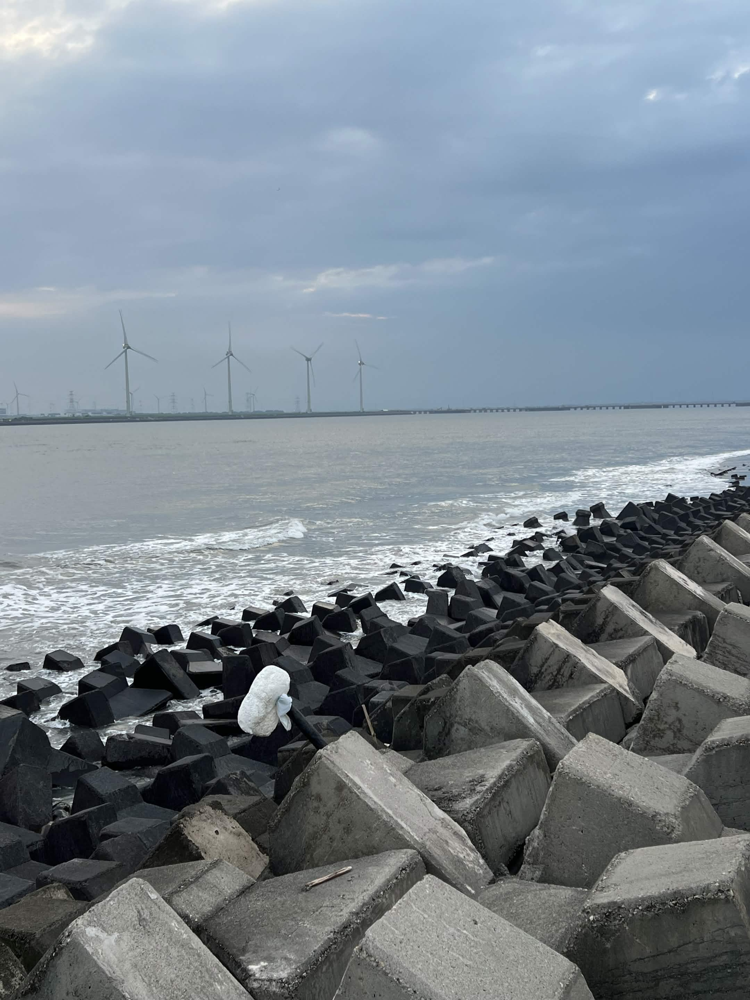

關於我的生活態度

嗨！我是 Lun，平常個性開朗、喜歡把生活過得簡單又有節奏感。對我來說，每天開機的第一件事不是打開電腦，而是先來一杯不加糖、不加奶的冰美式黑咖啡，苦澀回甘的味道最能讓人保持清醒。
課餘時間我喜歡跟朋友去看海吹風、參與社團演出，把生活裡有趣的瞬間記錄下來。寫程式跟過生活很像，遇到問題卡關的時候，先喝口咖啡、吹吹風，換個角度思考就能找到解法。
我的日常小原則
- 每天早上先來一杯不加糖、不加奶的冰美式黑咖啡開啟寫程式日常。
- 課餘時間到社團練習打木箱鼓（Cajón），用節奏感抒發課業壓力。
- 下課後和朋友玩音樂節奏與戰術射擊遊戲，訓練專注度與反應力。
- 週末有空喜歡去看海吹風、拍照記錄生活中有趣的瞬間。